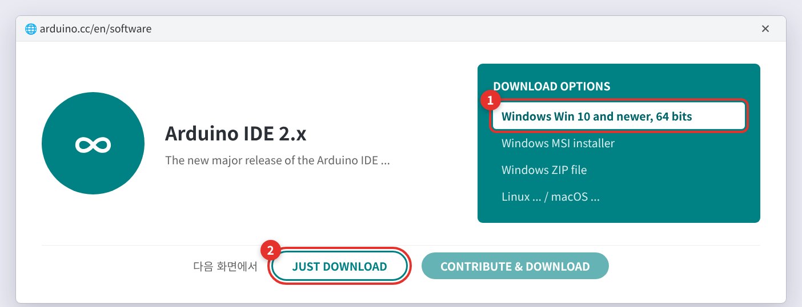
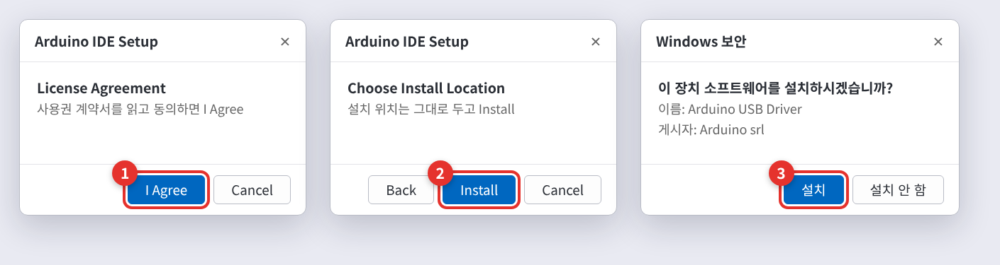
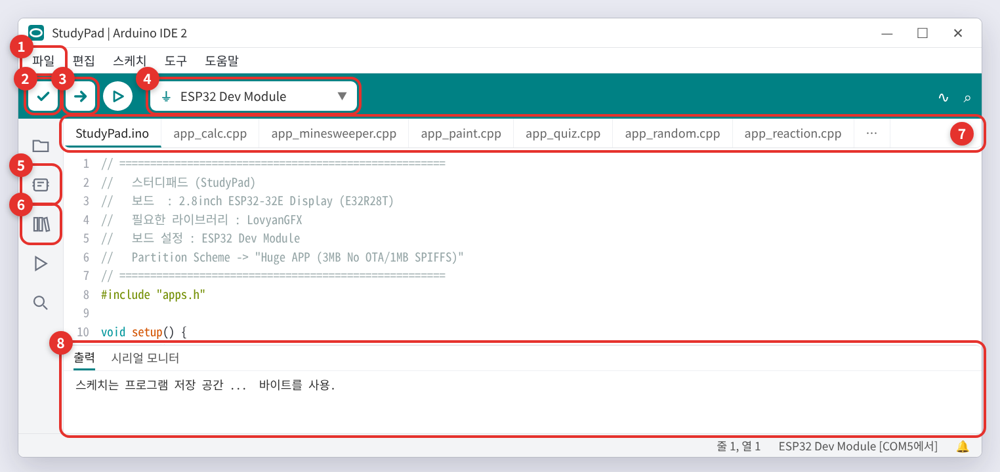
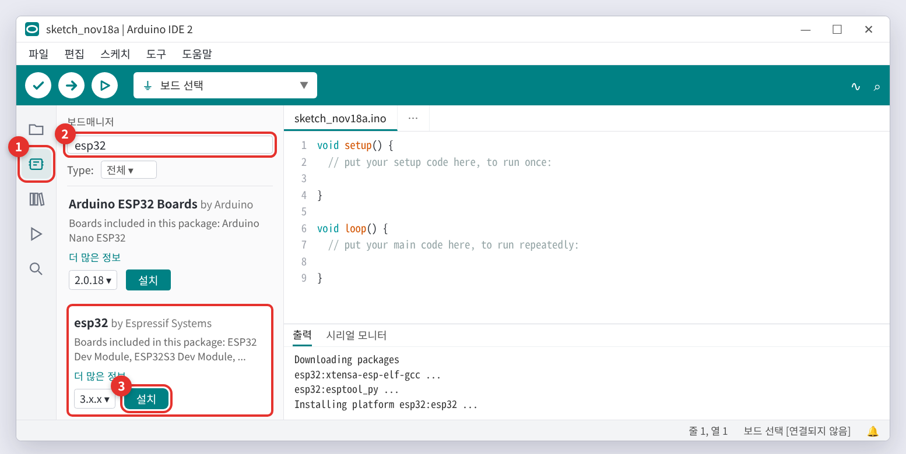
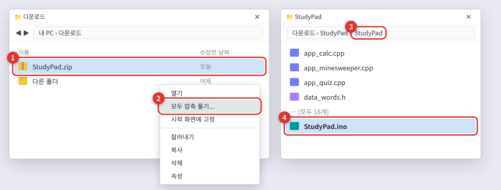
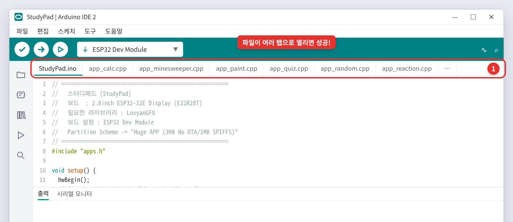

설치·업로드 가이드
아두이노를 처음 써 보는 친구를 위한 안내서예요. 1번부터 순서대로 따라 하면 보드에 스터디패드가 올라가요. 처음 한 번은 40~60분쯤 걸려요. 한 단계를 끝낼 때마다 제목 오른쪽의 다 했어요에 체크하세요.
낱말 먼저 알고 가요
- 아두이노 IDE: 코드를 쓰고 보드에 보내는 프로그램이에요. 글 쓰는 한글 프로그램처럼 코드 쓰는 프로그램이라고 생각하면 돼요.
- 스케치: 아두이노에서는 코드 파일을 '스케치'라고 불러요. 확장자는
.ino예요. - 컴파일: 사람이 쓴 코드를 보드가 알아듣는 기계어로 바꾸는 일이에요.
- 업로드: 바꾼 기계어를 USB 케이블로 보드에 보내 저장하는 일이에요.
1준비물 확인
책상 위에 아래 세 가지가 있는지 확인해요.
- 2.8인치 ESP32 터치 보드 — 화면 뒤쪽에 작은 칩과 버튼(BOOT, RESET)이 있는 보드예요.
- USB-C 케이블 — 반드시 데이터 전송이 되는 케이블이어야 해요. 휴대폰 충전기에 딸려 온 짧은 케이블 중에는 충전만 되는 것이 있어요.
- 윈도우 노트북 — 인터넷에 연결되어 있어야 해요.
학교 컴퓨터라면
프로그램 설치에 관리자 권한이 필요할 수 있어요. 설치 창에서 비밀번호를 물어보면 선생님을 불러요.
2아두이노 IDE 설치하기
이미 노트북에 Arduino IDE 2가 깔려 있으면 이 단계는 건너뛰어요. 바탕 화면이나 시작 메뉴에 청록색 아이콘이 있는지 찾아보세요.
- 인터넷 주소창에
arduino.cc/en/software를 입력해 들어가요. - Arduino IDE 2.x 부분의 Windows Win 10 and newer, 64 bits를 눌러요. (그림 ①)
- 후원 안내 화면이 나오면 JUST DOWNLOAD를 눌러요. 돈을 내지 않아도 돼요. (그림 ②)
- 다운로드 폴더에 생긴
arduino-ide_2.x.x_Windows_64bit.exe를 더블클릭해요.

- 설치 창에서 I Agree(동의) → 설치 대상은 그대로 두고 Next → 설치 위치도 그대로 두고 Install을 눌러요.
- 중간에 "이 장치 소프트웨어를 설치하시겠습니까?" 창이 나오면 설치를 눌러요. 여러 번 나올 수 있어요. 이건 USB로 보드와 이야기하기 위한 드라이버예요.
- Finish를 누르면 아두이노 IDE가 처음으로 열려요.

처음 열 때 기다리기
처음 실행하면 IDE가 필요한 정보를 내려받느라 오른쪽 아래에 알림이 여러 개 떠요. Windows 보안 경고 창이 나오면 액세스 허용을 눌러요. 알림이 다 사라질 때까지 1~2분 기다려요.
3메뉴를 한국어로 바꾸기
처음에는 메뉴가 영어로 나와요. 한국어로 바꾸면 이 가이드의 그림과 똑같아져요. 이미 한국어라면 건너뛰어요.
- 맨 위 메뉴에서 File을 눌러요.
- Preferences...를 눌러요. (단축키 Ctrl + ,)
- Language 옆 상자를 눌러 한국어를 골라요.
- OK를 누르면 IDE가 다시 열리면서 메뉴가 한국어로 바뀌어요.

4IDE 화면 구경하기
앞으로 자주 누를 곳 여덟 군데예요. 그림의 번호와 아래 표를 맞춰 보세요.

| 번호 | 이름 | 하는 일 |
|---|---|---|
| 1 | 메뉴 | 파일(열기·저장), 도구(보드·포트 설정)를 자주 써요. |
| 2 | ✓ 확인 | 코드에 틀린 곳이 없는지 컴파일만 해 봐요. 보드가 없어도 돼요. |
| 3 | → 업로드 | 컴파일한 다음 보드에 보내요. 보드가 연결되어 있어야 해요. |
| 4 | 보드 선택 | 지금 고른 보드 이름이 보여요. |
| 5 | 보드 매니저 | 보드 종류(ESP32)를 IDE에 설치하는 곳이에요. → 5단계 |
| 6 | 라이브러리 매니저 | 다른 사람이 만들어 둔 코드 꾸러미(라이브러리)를 설치하는 곳이에요. → 6단계 |
| 7 | 탭 | 스케치에 들어 있는 파일들이에요. 눌러서 파일을 바꿔 봐요. |
| 8 | 출력 창 | 컴파일·업로드 결과가 나와요. 빨간 글자가 나오면 오류예요. |
5보드 매니저로 ESP32 설치하기
아두이노 IDE는 처음에 아두이노 우노 같은 보드만 알고 있어요. 우리 보드의 두뇌인 ESP32를 쓰려면 ESP32용 꾸러미를 한 번 설치해야 해요. 이 일을 하는 곳이 보드 매니저예요.
- 왼쪽 세로줄에서 두 번째 아이콘(보드 모양)을 눌러 보드매니저를 열어요. (단축키 Ctrl + Shift + B)
- 검색 칸에
esp32를 입력해요. - 목록에서 esp32 by Espressif Systems를 찾아 설치를 눌러요. 위에 있는 Arduino ESP32 Boards가 아니에요!


esp32가 목록에 안 보이면
파일 → 기본 설정을 열고, 추가 보드 관리자 URL 칸에 아래 주소를 붙여 넣은 뒤 확인을 눌러요. 그다음 다시 검색해요.
https://espressif.github.io/arduino-esp32/package_esp32_index.json
설치가 중간에 멈추면 IDE를 껐다 켜고 다시 설치를 눌러요.
6라이브러리 매니저로 LovyanGFX 설치하기
라이브러리는 다른 사람이 미리 만들어 둔 코드 꾸러미예요. 스터디패드는 화면에 글자와 그림을 그리기 위해 LovyanGFX라는 라이브러리 딱 하나만 써요.
- 왼쪽 세로줄에서 세 번째 아이콘(책 모양)을 눌러 라이브러리 매니저를 열어요. (단축키 Ctrl + Shift + I)
- 검색 칸에
LovyanGFX를 입력해요. 대문자·소문자는 상관없어요. - LovyanGFX by lovyan03의 설치를 눌러요. 1분이면 끝나요.

여기까지가 '처음 한 번만' 하는 설치예요.
보드 매니저(ESP32)와 라이브러리 매니저(LovyanGFX)는 노트북 한 대에 한 번만 설치하면 돼요. 다음 시간부터는 7단계부터 하면 돼요.
7스터디패드 코드 내려받고 열기
- StudyPad.zip 내려받기를 눌러요. 다운로드 폴더에
StudyPad.zip이 생겨요. - 파일 탐색기에서
StudyPad.zip을 마우스 오른쪽 버튼으로 누르고 모두 압축 풀기... → 압축 풀기를 눌러요. - 새로 생긴 StudyPad 폴더 안에 또 StudyPad 폴더가 있어요. 그 안으로 들어가요.
StudyPad.ino를 더블클릭해요. 아두이노 IDE에서 스케치가 열려요.


StudyPad.ino, app_calc.cpp 같은 탭이 여러 개 보이면 성공이에요. 탭은 모두 18개예요.세 가지를 꼭 지켜요
- 압축을 풀지 않고 zip 안에서 바로 .ino를 열면 안 돼요. 저장도 업로드도 되지 않아요.
- 폴더 이름을 바꾸지 마세요. 폴더 이름(StudyPad)과 .ino 이름(StudyPad.ino)이 같아야 열려요. 이름을 바꾸고 싶으면 둘 다 똑같이 바꿔요.
- 새 버전을 받았을 때 예전 폴더 위에 덮어쓰지 마세요. 예전 폴더를 지우거나 다른 곳으로 옮긴 뒤 새로 풀어요. 지워진 옛날 파일이 남아 오류가 나요.
8보드 연결하고 포트 확인하기
- USB-C 케이블로 보드와 노트북을 연결해요. 보드 화면에 불이 들어와요. (처음 보드는 아무 그림이나 나올 수 있어요.)
- 컴퓨터는 보드를 COM5처럼 COM + 숫자라는 이름(포트)으로 알아봐요. 숫자는 노트북마다 달라요.

내 보드의 포트 번호 알아내기
윈도우 시작 버튼을 마우스 오른쪽으로 누르고 장치 관리자를 열어요. 포트(COM & LPT)를 펼치면 보드가 보여요. 케이블을 뺐다 꽂으면 사라졌다 나타나는 것이 내 보드예요.

포트(COM & LPT)가 없거나 노란 느낌표가 보이면
- 먼저 다른 케이블로 바꿔 봐요. 충전 전용 케이블인 경우가 가장 많아요.
- 그래도 안 되면 USB 칩 드라이버가 없는 거예요. 이 보드는 대부분 CH340 계열 칩을 써요. 선생님께 드라이버 설치를 부탁해요.
9도구 메뉴에서 세 가지 설정하기
IDE에게 "어떤 보드에, 어떤 크기로, 어느 포트로 보낼지" 알려 주는 단계예요. 하나라도 틀리면 업로드가 안 돼요.
① 보드 고르기: ESP32 Dev Module
- 메뉴에서 도구를 눌러요.
- 보드에 마우스를 올려요.
- esp32에 마우스를 올리면 아주 긴 목록이 나와요.
- ESP32 Dev Module을 눌러요.

② 파티션 고르기: Huge APP
스터디패드에는 한글 글꼴과 단어 1,664개가 들어 있어서 코드가 커요. 보드의 저장 공간을 프로그램 칸이 큰 방식으로 나눠 줘야 들어가요.
- 도구를 다시 눌러요.
- 아래쪽의 Partition Scheme에 마우스를 올려요.
- Huge APP (3MB No OTA/1MB SPIFFS)를 눌러요.

③ 포트 고르기: 8단계에서 찾은 COM 번호
- 도구를 눌러요.
- 포트에 마우스를 올려요.
- 8단계에서 확인한 COM 번호를 눌러요. 앞에 ✓ 표시가 생기면 골라진 거예요.

설정 정리 — 도구 메뉴를 열어 이 표와 똑같은지 확인해요
| 보드 | ESP32 Dev Module |
|---|---|
| Partition Scheme | Huge APP (3MB No OTA/1MB SPIFFS) |
| 포트 | 내 보드의 COM 번호 (예: COM5) |
| 나머지 항목 | 건드리지 않아요 (처음 값 그대로) |
IDE를 껐다 켜도 이 설정은 기억돼요. 다른 보드 예제를 올린 적이 있다면 다시 확인해요.
10✓ 확인(컴파일) 해 보기
바로 업로드해도 되지만, 처음에는 확인을 먼저 눌러 코드가 잘 바뀌는지 봐요.
- 왼쪽 위 ✓ (확인) 버튼을 눌러요. (단축키 Ctrl + R)
- 아래 출력 창에 글자가 올라가요. 처음 컴파일은 3~10분 걸릴 수 있어요. 노트북이 바빠 보여도 기다려요.
- 오른쪽 아래에 "컴파일 완료."가 뜨고, 출력 창에 "스케치는 프로그램 저장 공간 … 바이트를 사용"이 나오면 성공이에요.

11→ 업로드하기
- 보드가 USB로 연결되어 있고, 도구 → 포트가 맞는지 다시 확인해요.
- 왼쪽 위 → (업로드) 버튼을 눌러요. (단축키 Ctrl + U)
- 컴파일이 끝나면 출력 창에
Connecting....이 나오고, 이어서Writing at … (1 %)부터(100 %)까지 숫자가 올라가요. Hard resetting via RTS pin...이 나오고 오른쪽 아래에 "업로드 완료."가 뜨면 끝! 보드가 저절로 다시 켜져요.

Connecting........ 에서 점만 계속 찍히면
보드 뒷면의 BOOT 버튼을 꾹 누르고 있다가, Writing at이 나오면 손을 떼요. 보드를 업로드 대기 상태로 만드는 방법이에요.
업로드 중에는 케이블을 건드리지 마세요. 중간에 빠지면 보드가 이상하게 켜질 수 있어요. 그래도 고장 난 건 아니에요. 다시 업로드하면 돼요.
12처음 켜기 — 터치 보정
업로드가 끝나면 보드가 다시 켜지면서 터치 보정 화면이 나와요. 화면의 어디를 눌렀는지 보드가 정확히 알게 하는 과정이에요. 처음 한 번만 하면 돼요.
- 왼쪽 위 빨간 + 가운데를 터치펜으로 꾹 눌러요. 삑 소리가 나면 떼요.
- 이어서 나오는 오른쪽 위, 왼쪽 아래의 + 도 똑같이 눌러요.
- '스터디패드' 시작 화면이 나오고 홈 화면으로 바뀌면 완성이에요! 🎉


터치가 어긋나서 다시 보정하고 싶을 때
- 설정 앱 → 터치 보정 → 시작을 눌러요.
- 또는 보드를 켜고 '스터디패드' 시작 화면이 보이는 동안 BOOT 버튼을 눌러요. (BOOT를 누른 채로 전원을 켜면 업로드 대기 상태가 되어 화면이 안 나와요.)
다음 시간부터는 7단계(코드 열기) → 9단계(도구 설정 확인) → 11단계(업로드)만 하면 돼요. 이제 앱 사용법을 보면서 앱을 하나씩 써 봐요.
🆘안 될 때
출력 창의 빨간 글자는 위에서부터 처음 나온 error 줄이 가장 중요해요. 그 줄의 낱말을 아래 제목에서 찾아보세요.
Sketch too big / text section exceeds available space 컴파일

- 까닭
- Partition Scheme을 바꾸지 않았어요.
- 해결
- 도구 → Partition Scheme → Huge APP (3MB No OTA/1MB SPIFFS)를 고르고 다시 확인해요. → 9-②
LovyanGFX.hpp: No such file or directory 컴파일
- 까닭
- LovyanGFX 라이브러리가 설치되지 않았어요.
- 해결
- 라이브러리 매니저에서 LovyanGFX를 설치해요. → 6단계
'C_SCI' was not declared / ○○ was not declared 컴파일
- 까닭
- 새 코드를 예전 폴더 위에 덮어써서 지워진 옛날 파일(app_science.cpp 등)이 남아 있어요. 아두이노는 폴더 안의 .cpp를 전부 컴파일해요.
- 해결
- IDE를 닫고 예전 StudyPad 폴더를 지운 뒤 새로 압축을 풀어요. 그래도 똑같으면 폴더와 .ino 이름을 StudyPad2처럼 둘 다 바꿔서 열어요. (IDE가 기억하던 옛날 복사본을 안 쓰게 돼요.)
ESP_EXT1_WAKEUP_ANY_LOW was not declared / 이상한 낱말이 잔뜩 컴파일
- 까닭
- 보드를 잘못 골랐을 가능성이 커요. (예: ESP32S3 Dev Module)
- 해결
- 도구 → 보드 → esp32 → ESP32 Dev Module로 다시 골라요. → 9-①
포트 목록이 비어 있어요 / 포트가 회색이에요 연결
- 까닭
- 충전 전용 케이블이거나, 케이블이 헐겁거나, USB 드라이버가 없어요.
- 해결
- ① 다른 케이블로 바꿔 꽂기 ② 노트북의 다른 USB 단자에 꽂기 ③ 장치 관리자에서 확인하기 → 8단계
Failed to connect to ESP32 / Connecting...... 에서 멈춤 업로드
- 까닭
- 보드가 업로드 대기 상태로 바뀌지 못했거나, 포트를 잘못 골랐어요.
- 해결
- ① 도구 → 포트 번호 확인 ② 업로드를 누르고 Connecting이 나올 때 BOOT 버튼을 꾹 누르고 있다가 Writing이 나오면 떼기 ③ 시리얼 모니터가 열려 있으면 닫기
A fatal error occurred: ... / Upload Speed 문제 업로드
- 까닭
- 케이블이나 USB 단자가 빠른 속도를 못 따라가요.
- 해결
- 도구 → Upload Speed를 115200으로 낮춰서 다시 업로드해요. 느리지만 잘 올라가요.
업로드는 됐는데 화면이 하얗거나 그대로예요 업로드 후
- 까닭
- 보드가 아직 다시 켜지지 않았거나, 다른 종류의 보드예요.
- 해결
- 보드의 RESET 버튼을 한 번 눌러요. 그래도 그대로면 보드 이름(E32R28T, 2.8inch ESP32-32E)이 맞는지 선생님께 확인해요.
색이 사진 필름처럼 반대로 보여요 / 빨강과 파랑이 바뀌었어요 화면
- 해결
- 색이 반대면 설정 → 색 반전을 눌러요. 빨강·파랑이 바뀌었으면
hw.h탭의#define LCD_RGB_ORDER false를true로 바꿔서 다시 업로드해요.
누른 곳과 다른 곳이 눌려요 터치
- 해결
- 터치 보정을 다시 해요. 손가락 대신 터치펜으로, + 의 정가운데를 꾹 눌러요. → 12단계
소리가 안 나요 소리
- 해결
- 스피커가 보드의 스피커 단자에 꽂혀 있는지, 설정 → 소리 크기가 0(맨 왼쪽)이 아닌지 확인해요.
화면이 꺼졌어요 절전
- 해결
- 고장이 아니라 자동 절전이에요. 화면을 누르거나 BOOT 버튼을 누르면 하던 화면 그대로 깨어나요. 시간은 설정 → 자동 절전에서 바꿔요.
"배터리가 부족해요" 화면이 나오고 꺼졌어요 배터리
- 해결
- 기록은 저장되어 있어요. USB 케이블로 충전한 뒤 BOOT 버튼을 누르면 다시 켜져요.